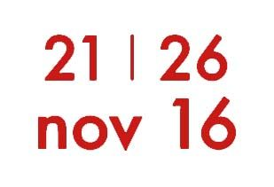

Développement durable, transition énergétique, robotique, intelligence artificielle, mégadonnées et TICS : un nouveau monde est en train de se construire sur fond de transition numérique, énergétique et industrielle. Lʼinformatique, lʼingénierie, la recherche scientifique et les mathématiques, sont les disciplines fondamentales sur lesquelles repose cette (r)évolution. Elles ont une importance capitale dans le sens où elles impactent et modifient à grande vitesse nos sociétés et nos économies. Quelle place pour les femmes dans la construction de ce nouveau monde ? Qui sont les femmes actives dans ces domaines ? Que font-elles ? Pourquoi ont-elles choisi ces voies ?
Comment se fait-il que les femmes soient sous-représentées dans les STEM ? Sur quoi repose ce phénomène ? Pourquoi cela pose-t-il un problème ? Comment y remédier ? Autant de questions que nous allons aborder lors de lʼAdaWeek.
Pour ce faire, nous avons pensé une programmation hybride en 3 volets #Ateliers #Conférences #TablesRondes, articulée autour de 3 axes #Education, #Emploi #Entrepreneuriat.
Ce format nous permet de : - proposer des activités à destination du public féminin au sens large, des petites filles aux seniors, au travers dʼinitiations grand public et du traitement de sujets plus techniques. - donner de la visibilité à des personnalités féminines remarquables dans ces secteurs, et ainsi favoriser leur reconnaissance. - participer au décloisonnement des métiers STEM Le but étant dʼadresser de manière ludique et créative les différents obstacles auxquels sont confrontées les femmes dans l'appropriation et la pratique des STEM.
C’est la comtesse anglaise Ada de Lovelace qui a écrit, en 1843, le tout premier programme informatique.
Un article de Philothée Gaymard pour Usbek et RicaCo-fondatrice et Co-Présidente d'alter way
Diplômée de CPE Lyon, Véronique Torner démarre son parcours entrepreneurial en 1998 avec la co-création de Black Orange, une startup e-commerce qui sera cédée aux Editions Atlas en 2000. Elle prend la direction générale de Masterline Net Solutions puis de Masterline pendant 5 ans aux côtés de Philippe Montargès, son fondateur. Masterline sera cédée à Alti fin 2005. Philippe Montargès et Véronique Torner co-fondent en 2006, alter way, ESN spécialiste du web avec des solutions Open Source. Véronique Torner est présidente de l’Open CIO Summit, le premier sommet de l’Open Source « par les DSI pour les DSI ». Elle intervient régulièrement auprès des décideurs SI pour les accompagner dans leur réflexion stratégique et la mise en œuvre de projets Open Source et a co-écrit le livre blanc « Etes-vous prêt pour l’innovation ? Les vrais enjeux de l’Open Source pour les DSI ». Elle participe également aux travaux de réflexion d'un réseau intitulé « Laboratoire d'innovation managériale ». Véronique Torner a été élue en juin 2013 administratrice au Syntec Numérique. A ce titre, elle préside la commission PME et régions du Syntec Numérique et est administratrice de Pacte PME. Elle a reçu le prix "Femme du Numérique" de la Tribune Women's Awards 2015 et a été la présidente du Comité de programme du Paris Open Source Summit 2015 (issu du rapprochement de Open World Forum et de Solution Linux). Par le décret du Président de la République du 8 février 2016, Véronique Torner a été nommée membre du Conseil National du Numérique. Depuis juin 2016, elle est également membre du conseil d'orientation de l'Institut Friedland et membre du conseil d'administration de Monde Nouveau - fonds de dotation de CPE Lyon.
Charlotte de Broglie
Ozanne Tauvel-Mocquet
Katalina Nadasi